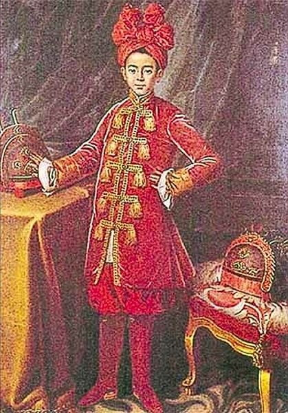

Nhiều lúc không còn lương thực, Nguyễn Ánh phải ăn trái bần chua với mắm sống; tay bốc cơm nguội, tay xé mắm chứ không dùng đũa. Một hôm có con cá n hỏ tự dưng nhảy vào thuyền ông, báo tin đừng sớm ra khơi, cưú ông khỏi bị Tây Sơn chận ngoài biển. Vào tháng 4 năm Nhâm Dần thứ III ( 1782) Nguyễn Ánh vào Hà Tiên, đi thuyền nhỏ ra biển giữa đêm tối như mực bổng có vật gì như đội dưới đáy thutền, mờ sáng ông mới hay là một bày rắn. Bầy tôi ai cũng sợ hãi, Nguyễn Ánh giục thuyền chèo mau, một lúc sau bầy rắn đi hết, thuyền ra được đảo Phú Quốc. Cái tích " gặp rắn thì đi, gặp quy thì vể xuất hiện từ đó
Có lần thuyền Nguyễn Ánh định ra khơi, bỗng có con kỳ đà lội qua sông chặn đường không cho thuyền ra biển, sau Nguyễn Ánh mới rõ nếu ra thì sẽ bị quân Tây Sơn chặn bắt. Tích " kỳ đà cản mũi " phát sinh từ chuyện này.
Những chuyện thoát k hiểm của Nguyễn Ánh thật lắm ly kì. Năm Quý Mão thứ IV ( 1783) quân tây Sơn vào Nam đánh riết, Nguyễn Ánh cùng năm, sáu kẻ bầy tôi phải bỏ chạy tháo quân. Qua sông Lật, nước chảy mạnh quá lại không có đò, Nguyễn Ánh phải nhào xuống lội qua. Đến sông Đặng ( 1) có nhiều cá sấu, Nguyễn Ánh bí đường. Chợt có con trâu nằm trên bờ. Nguyễn Ánh cởi trâu mà qua, nhưng nước chảy xiết, nhấn chìm trâu. may thay có con cá sấu đỡ trâu lên, cứu ông thoát được lên bờ.
Tháng 7 na/8m Quý Ma4o ( 1783), Nguyễn Hue65 nghe tin nguyễn Ánh ở Côn Lôn, đem hết lính thủy vây riết. Tự nhiên giông tố nổi lên, mây kéo tối rầm, sóng biển dâng to, thuyền Tây Sơn bị chìm quá nhiều, Nguyễn Ánh mới thoát được.
Một lần, Nguyễn Ánh ra cửa biển Ma Ly thám thính tình thế Tây Sơn, gặp thuyền Tây Sơn hơn hai mươi chiếc vụt tới vây phủ.
Ông liền kéo thuyền chạy về phía đông, lênh đênh ngoài cửa biển bảy ngày đêm. Thuyền hết nước, quân lính sắp chết khát, Nguyễn Ánh ngửa mặt lên trời khấn rằng: " Như tôi có mạng làm vua, xin cho thuyền ghé vào trong bờ để cứu tánh mạng mấy người trong thuyền! Nếu không, thuyền chìm xuống biển, tôi cũng cam tâm ". Bỗng nhiên gió lặng sóng im, mặt chia ra dòng trắng, dòng đen, bọc lấy dòng trong ở giữa. Trong thuyền có người múc uống, nếm thấy ngọt, liền la to: " Nước ngọt, nước ngọt! ". Ánh mùng rỡ sai múc b vừa được 4, 5 chum thì nước lại mặn như trước.
Trong cuộc chu iến với Tây Sơn, nhiều khi quân Nguyễn Ánh thắng là nhờ may mắn. Khi quân Nguyễn Ánh đến gần thành Qui Nhơn, Trần Quang Diệu, Vũ văn Dũng vừa đến Quãng Nghĩa. Nghe quân Nguyễn Ánh đã giữ lại xứ Tân Quan, hai tướng bèn bỏ thuyền lên bộ, kéo đi hơn 20.000 quân. Diệu ở ngoài đèo Bến Đá giả gây thanh thế, Dũng đem quân đến Chung Xá mưu đánh úp Nguyễn Ánh. Ban đêm đi qua khe, có một con nai trong rừng nhảy ra, quân tiền đạo của Dũng nhìn thấy la lên: "Nai! Nai ". Quân hậu đạo cũng vội la lên: " Đồng Nai ". Quân Tây Sơn tưởng là quân Nguyễn ở Đồng Nai bất thần ập tới nên khiếp sợ bỏ chạy, sập xuống hầm hố khá nhiều. Tống Viết Phúc nhân cơ hội đó đem vài trăm quân ra đuổi,làm quân tây Sơn thua to. Quan trấn thủ thành Qui Nhơn là Lê Văn Thanh mãi không thấy viện binh đến, mà luơng thực dự trữ đã hết sạch, nên đành phải mở cửa ra hàng. Nguyễn Ánh chiếm được thành, đổi Qui Nhơn là Bình Định
( Theo Quốc triều chính biên và Tôi biết gì về Gia Long tẩu quốc của Vương Hồng Sến )
------------------------------------------------
1) Vương Hồng Sến gọi là sông Vàm Cỏ tên cổ là Vùng Gù

Chân dung hoàng tử Cảnh